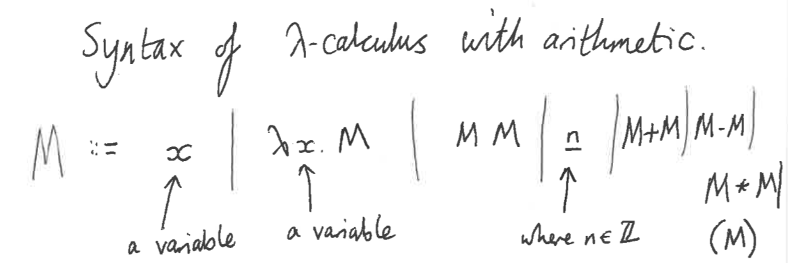

This module is about problems and computers, except for the last part which is about λ-calculus.
Some questions that we can ask ourselves:
What problems can be solved on a computer?
What problems can be solved on a computer with only finitely many states?
What problems can be solved fast on a computer?
What does "fast" mean anyway?
What does "computer" mean anyway?
etc..
Language Membership Problems
Suppose that we have a set of characters, the alphabet Σ.
A word (or string) is a finite sequence of characters. We write Σ* for the set of all words. We can concatenate words.
The empty word is written as ε.
A language is a set of words, which means that it is a subset of Σ*.
Example language 1
Let's say the alphabet is {a,b,c}. The image below shows some example languages:
This can be applicable in real-life situations such as:
In all of these examples, somebody has provided a word and we want to know whether it is an acceptable word. Ideally, we want a computer program that will tell us.
Regular Expressions
Every regular expression gives rise to a language – a regular language . Some useful notations for describing languages:
We write Empty for the language consisting of no words, or the empty set.
We write a for the language consisting of the single-character word a
We write ε for the language consisting of just the empty word.
Suppose L and L' are languages.
We write LL' for the set of words that are a concatenation of a word in L and a word in L'
We write L | L' for the set of words that are either in L or L' . This is basically the union of L and L' .
We write L* for the set of words that are a concatenation of some number of words in L . Note that "some number" might be 0, so the empty word is in L* .
All expressions built up this way makes a regular expression. A regular expression E can be either Empty, ε, a, b c, or anything in the alphabet, EE' , E | E' , or E* .
Just like arithmetic expressions, you can't make sense of regular expressions without knowing the precedence rules. * has the highest precedence, then juxtaposition (putting things next to each other, you juxtapose AB in algebra means A * B, or concatenation) then |.
Example exercises
Is the word abb in the language a(b|c)* ? Hover for answer
Is the word abc in the language a(b|c)* ? Hover for answer
Is the word aabbab in the language (a(b|c)*)* ? Hover for answer
Is the word abbabca in the language (ab|ba)* ? Hover for answer
is the language ((a|b)(b|c))* the same as the language (ab|ac|bb|bc)* ? Hover for answer
For each regexp E , could you write a program that takes a word w and says whether it's in the language represented by E? Hover for answer
Could you write a single program that takes a word w and a regexp E and says whether w is in the language represented by E ? Hover for answer
Could you write a program that takes two regexps and says whether they represent the same language? Hover for answer
Regular expression in theoretical computer science means an expression built up from the above operations and nothing more. The term has come to be used in Linux etc. to include various other operations. Regexps are also used in a somewhat different sense to find occurrences of words within a larger word.
Kleene's theorem says a language is regular (i.e. recognized by a regular expression) if and only if it is accepted by a finite state automaton.
Here are a few common abbreviations, it is optional to use these.
Finite State Automaton
A finite state automaton over Σ is
a finite set ℚ of states ( nodes )
a transition function ℚ × Σ → ℚ ( paths, edges )
a set Acc ⊆ ℚ of accepting states ( double nodes )
an initial state q0 ε ℚ ( diamond node )
Every finite state automaton has an associated language. To convert a partial FSA into a complete FSA, simply add an error state.
Removing ε-transitions There's a slow a-transition from state q to state q' when, starting from state q we can follow some number of ε-transition, and end in state q'. A state q is slowly accepting when, starting from state q we can follow some number of ε-transitions and reach an accepting state.
But if we want to remove all ε-transitions, we keep the set of states, keep the initial state, replace the slow transitions by transitions, and replace slowly accepting states by accepting states. After removing all ε-transitions, we will obtain a Non-Deterministic Finite Automaton (NDFA).
Determinisation Given a NDFA, we can form a Deterministic Finite Automaton (DFA) by first having the states a subset of ℚ, then from a state U ⊆ ℚ, when we input a, take the set of all states that we can reach by an a-transition from a state in U. An accepting state is any that contains a state in Acc. The initial state is {q0}.
Converting a regexp into a DFA Convert first into NDFA by removing ε-transitions, and then determinise as mentioned above.
Converting DFA into a regexp So say we have states {0,1,...,n – 1}. For any state i and j and any k ≤ n, we want a regexp E i→j <k that accepts those words that take us from i and j with intermediate states all < k.
The image below shows the formula to convert DFA into a regexp.
Note: Every node in NDFA will always have equal number of transitions, and that number is all the possible transitions, and each of them are labelled with sets of states.
Operations on Regular Languages We can use Kleene's theorem to prove that some languages are regular. Firstly, the complement of a regular language L is regular. The proof is to get a DFA that recognises L, and by Kleene's theorem, the new complement automaton will have accepting states that are the set ℚ\Acc. This recognises the complement of L, so the latter is regular. The intersection of regular languages L and L' is regular (Corollary), because it's the complement of the union of the complements L and L' by Kleene's theorem. If L and L' are regular, then L \ L' is regular because L ∩ (Σ \ L') by corollary.
Proving a language is not regular We can prove this by finding an L-distinguishing suffix for words. Suppose we have a DFA that recognises the language L. And if we have words that have an L-distinguishing suffix, then each word must take us from the initial state to different states.
If there is a countable sequence of distinctive words, then the minimum states of the DFA will be equal to the size of the set.
However, if it is an infinite sequence of distinctive words, then there will be no DFA, and by Kleene's theorem the language is not regular. (Myhill-Nerode Theorem)
Also by the use of pumping lemma, which says that for any regular language L there exists a constant p such that any word w in L with length at least p can eb split into three substrings, w = xyz, where the middle portion of y must not be empty, such that the words xz, xyz, xyyz, xyyyz, ... constructed by repeating y zero or more times are still in L. The repetition process is called "pumping". Moreover, the pumping lemma guarantees that the length of xy will be at most p, imposing a limit on the way in which w may be split. Finite languages trivially satisfy the pumping lemma by having p equal to the maximum string length in L plus one.
Bisimulation
An unpointed automaton is one that has no initial state. A bisimulation between unpointed total deterministic automata (ℚ, σ, Acc) and (ℚ', σ', Acc') with the same alphabet L is a relation R ⊆ ℚ × ℚ' such that if qRq' and a ε L then σ(q,a)Rσ'(q',a), and if qRq' then q ε Acc iff q' ε Acc'.
Suppose that we have to unpointed automata for the same alphabet L. Then a state q0 ε Q is bisimilar to a state q'0 if and only if they accept the same language. To prove this, show that for any word w , if qRq' then q accepts w if and only if q' accepts w. This is by induction on w.
The theorem is that two states accept the same language iff they are bisimilar.
Minimisation
To minimise an automaton means to throw away unreachable states and to identify bisimilar states.
Draw a table for all pairs of states (P,Q)
Mark all pairs where P ∈ Acc and Q ∉ Acc
If there are any unmarked pairs (P,Q) such that transitions [σ(P,x), σ(Q,x)] is marked, then mark [P,Q] where 'x' is an input symbol. Repeat this until no more markings can be made.
Combine all the unmarked pairs and make them a single state in the minimised DFA
Decidability
Turing Machines
Complexity
Lambda Calculus
λ-calculus is a calculus of functions
"λx" means "the function that maps x to "
Juxtaposition means application
f x (as in OCaml and Haskell)

Precedence conventions
Application has highest precedence
* and /
+ and -
λx has lowest precedence
Application associates to the left
e.g. MNP should be bracketed as (MN)P
e.g. (λx. λy. z x y) 15 12 implies ((λx. λy ((z x) y)) 15) 12
There are bound and free occurrences of variables
e.g. In (λx. λy. z x y) 15 12
x and y are bound, but z is free
An occurrence of a variable is bound to the innermost binder of that variable whose scope contains the occurrence
We say that terms are α-equivalent when they are the same, except for the binders and
bound occurrences of variables, and these are bound to the same place
α-equivalent
λx. λx. λy. x+3
λu. λv. λu. v+3
Not α-equivalent (because free variables are different)
λx. λx. λy. x+z
λu. λv. λu. v+w
α-equivalent terms are regarded as the same
Reduction of λ-terms
δ-reductions (arithmetic)
m + n → m+n
e.g. 5 + 7 → 12
m + n is a "δ-redex"
β-reductions
(λx. M) N → M[N/x]
(λx. M) - "body" of the λ-abstraction
N - argument
M[N/x] - M, where x is replaced by N
e.g. (λx. x+3) 7 →β 7 + 3 →δ 10
(λx. M) N is a "β-redex"
Substitution notes:
When we form M[N/x]
We replace only the free occurrences of x by N
i.e. in (λx. ((λx. x) 17) + x) 8
The free variables in N must not be captured
i.e. in (λy. ((λx. x + y) 7) (x + 5)
We stop evaluating when we reach a βδ-normal form
i.e. a term that doesn't contain either a β-redex or a δ-redex
e.g 23, x + 23, λx. x+23
A term that has no free variables is called a closed term.
Church-Rosser Theorem
If M ↝* N and M ↝* P then there exists Q such that N ↝* Q and P ↝* Q
M ↝* N means that M reduces to N in zero or more steps
Corollary: Any term M has at most one βδ-normal form
Omega
The term Ω is the following:
(λx. x x)(λx. x x) ↝ (λx. x x)(λx. x x)
The reduction graph is Ω↺
So Ω doesn't have a normal form
Types
Types are a way of ruling out "badexes"
Examples of "badexes"
λx. M + n
n + λx. M
λx. M + λx. M'
n M
They're correct terms of untyped λ-calculus. So is Ω
Typed λ-calculus with arithmetic
Syntax of types
A ::= int | A → A | (A)
i.e. int → int is the type of functions that take an integer argument and return an integer
Convention: → associates to the right
int → int → int
Implicit bracketing is int → (int → int)
Here is a term of untyped λ-calc with arithmetic
Example 1:
λx. x3 + 7
Annotate this with types by looking for clues
Clue 1: x is applied to something. So has type A → B
Clue 2: The thing it's applied to, which has type A, is an integer. So A = int
Clue 3: x3, which has type B, gets added to something. So B = int
Conclusion: x has type int → int
Annotated term:
λx: int → int. x3 + 7
Example 2:
λx. λy. x(xy) + 17
Look for the clues
Clue 1: x is applied to something. So x has type A → B
Clue 2: x is applied to y. So y has type A
Clue 3: x is applied to xy, which has type B. So A = B
Clue 4: x(xy), which has type B, is added to something. So B = int
Conclusion: x has type int → int and y has type int
Annotated term:
λx: int → int. λy: int. x(xy) + 17
This has type (int → int) → (int → int) or just (int → int) → int → int
Example 3:
(λx. 3)(17 λy. y)
17 has type A → B because it's applied to something, but also has type int.
Contradiction
Example 4:
(λx. x x)(λy. y y)
Clue 1: x gets applied to something, so it has type A → B
Clue 2: x gets applied to x, so A = A → B
So A is:
(( ... → B) → B) → B
But all out type expression are finite. Contradiction.
Example 5:
λx. x 7
Clue 1: x is applied to something, so it has type A → B
Clue 2: x is applied to 7, which has type int, so A = int
Conclusion: x has type int → B
Most general solution:
λx: int → B. x 7
which has type:
(int → B) → B
Multi-ary Functions
In λ-calculus, all functions are unary. i.e. They take just 1 argument
We use currying to express multi-ary functions in λ-calculus
We represent a function with two arguments as a function that returns a function. Say we want the function that
takes arguments x:int and y:int and returns x + 17 * y We represent it as:
λx: int. λy: int. x + 17 * y
which has type
int → (int → int)
(λf: int → (int → int). (f 5) 2) (λx: int. λy: int. x + 17 * y)